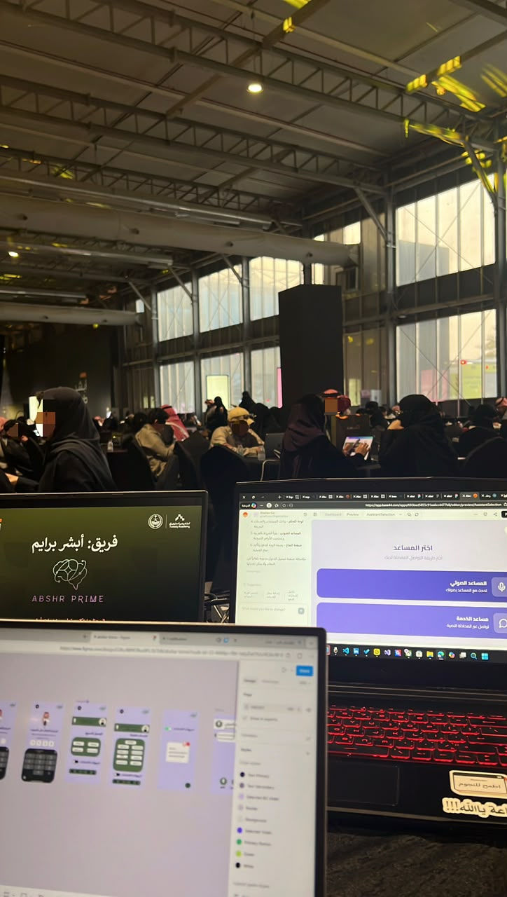

Passionate Computer Science student at Taif University with a keen interest in software development, web engineering, and Artificial Intelligence.
Dedicated to building innovative, user-centered solutions and constantly expanding my technical skill set.
From developing functional Telegram bots to researching the ethics of AI, I thrive on turning complex challenges into clean, efficient code.
Project Title: Abshr Prime(Tuwaiq Hackathon)
Purpose: A collaborative project developed during the Tuwaiq Hackathon.
Our team aimed to enhance the "Absher" user experience by integrating a voice assistant.
My Role: I helped design the user interfaces using Figma
and tested the UX for our n8n workflow.
I also worked on prototyping a voice authentication feature to add further functionality to the assistant.

Purpose: A personal learning project focused on understanding the fundamentals of automation and bot development.
My Role: I built a simple Telegram bot using Python to practice handling user inputs and managing basic bot responses. It started as a math solver concept,
but I later adapted it into a simple translation tool to explore different API integrations
What i learned: I gained foundational experience in Python programming, interacting with the Telegram Bot API,
and learned how to adapt project features during the development process